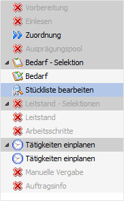
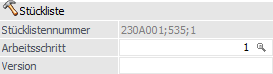
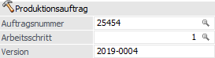
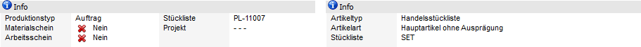
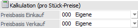
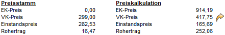
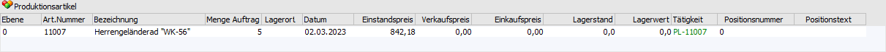

Im linken und oberen Bereich des Fensters Stückliste bearbeiten werden u.a. Kopfdaten des Produktionsauftrags (z.B. Produktionsartikel und Produktionsmenge) ausgewiesen.

Folgende Eingabefelder, Einstellungen und Information stehen zur Verfügung:
Navigation

Im linken Teil des Fensters befindet sich die Navigation, in welcher alle Hauptbereiche der PPS zu finden sind. Die aktiven Einträge können direkt angewählt werden und bewirken einen Wechsel in den jeweiligen Programbereich.
Stückliste bzw. Produktionsauftrag
Der erste Bereich unterscheidet sich, je nachdem, ob es sich um eine Handelsstückliste / Fertigungsstückliste oder einen Produktionsartikel handelt.
ü Handelsstückliste /
Fertigungsstückliste

ü Produktionsartikel

Ø Stücklistennummer / Auftragsnummer
Eingabe der Nummer des Produktionsauftrags, welcher bearbeitet werden soll.
Hinweis
Wenn das Fenster über die Belegerfassung der WinLine FAKT aufgerufen wird, dann ist eine Eingabe nicht möglich, da dieses Feld bereits automatisch gefüllt wurde. Je nachdem, ob es sich um einen Handelsstücklisten- oder einen Produktionsartikel handelt, ermittelt sich die Nummer unterschiedlich:
ü Handelsstückliste /
Fertigungsstückliste
Die Nummer setzt aus der Kunden- / Lieferantennummer +
der Laufnummer des Belegs + einer pro Beleg aufsteigenden laufenden Nummer
zusammen (getrennt werden diese 3 Werte jeweils durch ein ";").
ü Produktionsartikel
Die Nummer
ermittelt sich aufgrund des in den PPS-Parametern (Bereich
"Produktionsauftragsanlage" - Feld "Nummernkreis") hinterlegten
Nummernkreises.
Achtung
Die gleichzeitige Bearbeitung eines Produktionsauftrags durch mehrere Benutzer ist nicht möglich.
Ø Arbeitsschritt
Handelt es sich um einen Auftrag mit einer mehrstufigen Stückliste, so besteht dieser automatisch aus mehreren Arbeitsschritten. In solch einem Fall kann hier der zu bearbeitende Arbeitsschritt gewählt werden.
Hinweis
Nach Verlassen des Feldes wird die Anzeige in den nachfolgenden Bereichen automatisch aktualisiert.
Ø Version
In diesem Feld kann ein bis zu 20stelliger, alphanumerischen Wert als Versionsnummer hinterlegt werden. Vorbelegt wird dieser mit der Hinterlegung aus dem Stücklistenstamm.
Info

Abhängig davon, ob es sich um einen Produktionsauftrag oder eine Handelsstückliste / Fertigungsstückliste handelt, werden in diesem Bereich unterschiedliche Informationen zu dem Auftrag bzw. der Stückliste angezeigt.
Kalkulation (pro Stück-Preise)

In diesem Bereich kann die Preiskalkulation vorgenommen werden. Sobald ein Einkaufs- oder Verkaufspreis (Bereich "Stücklistenartikel bzw. Produktionsartikel" oder "Artikeltabelle") editiert wird, stellt sich die aktive Preisliste innerhalb der Felder "Preisbasis Einkauf" bzw. "Preisbasis Verkauf" automatisch auf "000 - Eigene" um.
Die Speicherung der Werte bleibt so lange bestehen, bis die Preisliste in den Eingabefeldern wieder gewechselt wird. Dadurch werden die Werte aus der Preisliste "000 - Eigene" gelöscht.
Achtung
Die Preisliste wird nicht auf "000-Eigene" umgestellt, wenn die Option "3 - Einzelzeilen-Preisfindung" in den FAKT Parameter (Bereich "Belege - Stücklisten" - Feld "Preisfindung") gesetzt ist. In solche einem Fall werden die vorgenommenen Änderungen direkt bei der gewählten Preisliste gespeichert.
Hinweis zum Verkaufspreis
Der Verkaufspreis wird durch die Kalkulation aus WinLine PPS heraus nicht in den Produktionsartikel zurückgeschrieben. Der Preis dient dort lediglich der Kontrolle z.B., wenn Änderungen in der Zusammensetzung der Stückliste vorgenommen wurden. Soll der Verkaufspreis verändert werden, ist dieses im bzw. über den Beleg in der WinLine FAKT durchzuführen.
Hinweis zum Einstandspreis
Der kalkulierte Einstandspreis wird bei auftragsbezogenen Produktionsartikeln für die Buchung der Verkaufszeile im Lagerjournal herangezogen. Wenn dieser Wert auch die Kosten der benötigten Ressourcen beinhalten soll, dann kann dieses in den PPS-Parametern (Bereich "Parameter" - Option "Einstandspreis in den Kundenauftrag retourspeichern") hinterlegt werden. Grundvoraussetzung hierfür ist, dass die Endmeldung in WinLine PPS vor der Lieferung aus WinLine FAKT erzeugt werden.
Ø Preisbasis Einkauf
Auswahl der Preisliste, die für die Kalkulation des Einkaufspreises herangezogen werden soll.
Hinweis
Nach Verlassen des Feldes wird die Anzeige in den nachfolgenden Bereichen automatisch aktualisiert.
Ø Preisbasis Verkauf
Auswahl der Preisliste, die für die Kalkulation des Verkaufspreises herangezogen werden soll.
Hinweis
Nach Verlassen des Feldes wird die Anzeige in den nachfolgenden Bereichen automatisch aktualisiert.
Preisinfo

In diesem Bereich werden die Preise zusammengefasst dargestellt.
Ø Preisstamm
Die Preise unter dem Punkt "Preisstamm" stammen aus dem Artikelstamm des Artikels.
Ø Preiskalkulation
Die Preise unter dem Punkt "Preiskalkulation" ergeben sich aus den hinterlegten Komponenten.
Ø VK-Preis
Dieser Button steht nur zur Verfügung, wenn das Stücklistenfenster über die Belegerfassung von WinLine FAKT geöffnet wurde. Die Bestätigung des Buttons bewirkt, dass der kalkulierte VK-Preis als Einzelpreis in die Belegzeile des Artikels übernommen wird.
Stücklistenartikel / Produktionsartikel

In diesem Bereich werden diverse Informationen zu der Handelsstückliste / Fertigungsstückliste bzw. dem Produktionsartikel in Form einer Tabelle ausgewiesen.
Ø Menge Auftrag
Wir das Fenster über die WinLine PPS geöffnet, so kann an dieser Stelle die herzustellende Menge geändert werden. Hierbei wird die Menge der Komponenten (wenn gewünscht) ebenfalls angepasst.
Ø Lagerort
In der Spalte "Lagerort" wird über den Status der Lagerorterfassung Auskunft gegeben:
ü  - Rot
- Rot
Die zu produzierende Menge wurde
bisher nicht auf Lagerorte aufgeteilt.
ü  - Orange
- Orange
Ein Teil der zu produzierende
Menge wurde nicht auf Lagerorte aufgeteilt.
ü  - Grün
- Grün
Die zu produzierende Menge wurde
auf Lagerorte aufgeteilt.
ü  - Dunkelgrün
- Dunkelgrün
Es wurde auf einen Lagerort
mehr aufgeteilt, wie produziert wird. Wenn die Aufteilung in solch einem Fall
über mehrere Orte stattgefunden hat, dann wird eine orange Kugel angezeigt.
Hinweis
Per Doppelklick auf das Kugel-Symbol kann das Fenster "Lagerorte erfassen" geöffnet werden.
Ø Positionsnummer
An dieser Stelle kann die individuelle Positionsnummer der Stückliste verändert werden (weitere Details zu dem Thema "Positionsnummern / Positionstext" entnehmen Sie bitte dem Stücklistenstamm).
Ø Positionstext
Mit Hilfe des Positionstextes kann innerhalb einer mehrstufigen Stückliste durch Vererbung eine Nummernstruktur geschaffen werden. An dieser Stelle ist eine manuelle Änderung des Textes möglich (weitere Details zu dem Thema "Positionsnummern / Positionstext" entnehmen Sie bitte dem Stücklistenstamm).